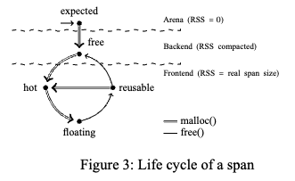

Fast, multicore-scalable, low-fragmentation memory allocation through large virtual memory and global data structures
在多核下的动态内存分配，考虑到统一跨度和不同跨度问题，实现了一个结合。
1
在高级编程语言中，动态内存管理是一项关键技术。这意味着程序在运行时动态地分配和释放内存，以适应不断变化的数据存储需求。动态内存管理的效率直接影响程序的性能和资源使用效率。
性能扩展性问题：在多核处理器上，一个理想的内存分配器应该能随着处理器核心数的增加而线性地提高性能。然而，许多现有的内存分配器在处理多线程或多核心时，性能增长并不明显，这通常是由于内存访问冲突、同步开销或其他资源竞争导致的。简单来说，这意味着虽然处理器的计算能力增加了，但内存分配器无法充分利用这些额外的计算资源，导致整体性能提升有限。
内存消耗问题：一些内存分配器虽然能够在多核环境下扩展其性能，但这种扩展往往以牺牲较高的内存消耗为代价。这是因为为了减少线程间的资源竞争，这些分配器可能会为每个核心或线程分配额外的内存资源（如缓冲区、内存池等），这虽然可以提高性能，但同时也增加了内存的整体使用量。这种方法在资源受限或对内存使用敏感的应用场景中可能不是最优选择。
TLAB是用于线程本地内存分配的缓冲区。每个线程都有自己的TLAB，这样可以在没有全局锁的情况下快速分配内存。因为内存分配和释放操作局限在本地，所以可以大幅减少线程之间的竞争，提高性能。
“跨度”指的是连续的内存块，
分配速度：跨度越大，每次需要扩展TLAB时，分配的速度通常越快。这是因为较大的跨度减少了与操作系统交互的次数，从而加快了内存分配的速度。
内存效率：然而，跨度越大，可能会导致内存使用效率降低。因为TLAB中未使用的内存不能被其他线程利用，这可能导致内存浪费。只有当整个跨度都不再被使用时，它才能被归还给操作系统或者被其他线程重用。
这段描述讨论了内存分配器中跨度（spans）的尺寸设计对内存管理效率的影响。分为两种设计策略：所有跨度具有相同尺寸和跨度尺寸不一。这两种策略各有优劣，通常的解决方案是采用一种混合型策略。让我来逐一解释这些概念：
所有跨度具有相同的尺寸
当所有的跨度大小相同时，管理变得更简单。无论请求的对象大小如何，都可以从任何空闲跨度中分配内存。这种设计的主要优点是：
简化管理：所有的跨度都是一样大，易于管理和重用。
线程同步：只需要最基本的线程同步，因为所有跨度都是标准化的，重用机制简单。
然而，这种方法也有缺点：
内部碎片：如果跨度大小设置得比较大，而分配的对象较小，那么在每个跨度内部可能会有未使用的空间，从而导致内存浪费。
跨度尺寸不一
这种设计允许跨度有不同的大小，更灵活地适应不同大小的内存请求。其优点包括：
灵活性：可以根据需要分配最合适大小的跨度，减少内部碎片。
优化内存使用：通过选择最适合当前需求的跨度大小，可以更有效地利用内存。
但这种设计也有其挑战：
线程同步和碎片整理：不同大小的跨度可能需要更复杂的管理策略，包括线程间的同步和内存碎片的整理，以确保内存的高效使用。
混合型设计
大多数高性能的并发内存分配器采用的是混合型设计，结合了上述两种策略的优点。在这种设计中：
小对象使用固定大小跨度：为了高效管理和快速分配，小对象通常在固定大小的跨度中分配，这些跨度小而均匀。
大对象使用可变大小跨度：对于较大的对象，则选择最合适的跨度大小进行分配，以减少内部碎片和提高内存利用率。
这种混合策略尝试平衡内存使用的效率和分配操作的性能，通过适当的跨度管理减少内存浪费同时保持高效的内存访问速度。
2
这段话解释了scalloc内存分配器中“虚拟跨度”（virtual spans）概念如何提升性能和内存效率，尤其是在并发环境下。下面详细解释各个部分：
虚拟跨度和真实跨度
在scalloc中，虚拟跨度是在虚拟内存中预留的较大内存块，而实际的内存分配（真实跨度）通常只占用虚拟跨度的一小部分。这样做的好处包括：
减少协调成本：所有虚拟跨度大小相同，简化了内存管理逻辑，因为不需要为不同大小的跨度进行复杂的协调和管理。
降低内存消耗：虚拟跨度中未使用的部分不会映射到实际物理内存，因此不会占用物理资源。操作系统通过按需分页技术（on-demand paging）管理这些内存，只有被实际使用的部分才占用物理内存。
全局数据结构和跨池
全局数据结构：虚拟跨度的统一大小允许使用单一的全局数据结构（如跨池，span-pool）来管理所有的空闲跨度。这种方法减少了传统上因数据结构复杂性引起的性能瓶颈。
跨池：跨池是一个高效、可扩展的后端存储结构，用于存储和回收不再使用的跨度。当跨度不再被任何线程使用时，它们可以被快速地归还给跨池，并最终通过
madvise系统调用释放回操作系统，从而减少了物理内存的碎片化。
前端设计
恒定时间操作：scalloc的前端设计保证至少有一个线程能在常数时间内完成内存分配或释放操作，即使在多线程环境下也能保持高性能。这是通过减少需要同步的操作和优化内存操作路径来实现的。
64位地址空间的利用：
描述了64位地址空间和按需分页技术如何帮助减少内存消耗和代码复杂性。即使在只分配1字节对象的极端情况下，scalloc也能在32TB的虚拟内存中分配高达256GB的物理内存，因为未使用的虚拟内存不会被映射，从而不占用物理资源。
锁自由技术的优势：
分析了锁自由技术如何提升性能和可扩展性，尽管这并不总是必需的。scalloc在其设计中使用了分布式的锁自由数据结构（如Treiber栈），这些结构支持快速并发访问，而不需要动态分配管理结构，从而提高了内存利用效率和分配速度。
常数时间内存释放的实现：
讨论了如何通过常数时间操作来释放内存，这不仅有助于增强系统的健壮性，还可以节省内存。在scalloc中，内存的释放和回收是通过即时将不再使用的跨度返回给内存池来实现的，减少了之后可能需要的非常数时间清理操作。
3

第三章主要讲的是虚拟跨度（virtual spans）、跨度池（span-pool）和前端（frontend）的工作原理，以及它们在scalloc内存分配器中的集成。具体来说，这一章介绍了以下几点：
真实跨度和大小类别：
真实跨度是scalloc内存分配器中连续的一部分内存，划分成相同大小的块。块的大小决定了跨度的大小类别。所有属于同一大小类别的跨度包含相同数量的块。
scalloc有29个大小类别，但只有9种不同的真实跨度大小，这些大小都是4KB的倍数。
虚拟跨度：
虚拟跨度是分配在非常大的虚拟内存区域（32TB）中的跨度，称为arena。所有虚拟跨度的固定大小为2MB，并在arena中2MB对齐。
每个虚拟跨度包含一个真实跨度，真实跨度的大小类别决定了虚拟跨度的大小类别。
使用虚拟跨度的优点包括：物理内存碎片减少、小对象和大对象的统一处理、以及减少系统调用的次数。
跨度池：
跨度池是一个全局的并发数据结构，逻辑上对应于不同大小类别的“栈式”池的数组。每个池内包含多个无锁Treiber栈，这些栈分配给每个核心。
跨度池的设计灵感来自分布式队列，用栈而不是队列是为了空间局部性和更低的延迟。
前端：分配和释放：
前端负责处理来自应用程序的内存分配和释放请求。scalloc将跨度的状态分为：期望（expected）、空闲（free）、热（hot）、浮动（floating）和可重用（reusable）。
内存分配时，线程首先检查其本地分配缓冲区（LAB）的对应大小类别是否有热跨度。如果有，就在热跨度的本地空闲列表中分配块；如果没有，就尝试从可重用跨度集中获取新跨度。
释放内存时，线程根据跨度所属状态将块返回到相应的空闲列表。新的技术创新在于，scalloc在释放最后一个对象时立即释放跨度，而其他跨度分配器在下一次分配触发清理时才释放跨度。
总结来说，这一章详细描述了scalloc内存分配器中的关键设计和实现细节，解释了如何通过使用虚拟跨度和高效的跨度池来实现高性能和低内存消耗。
在scalloc内存分配器中，跨度（span）可以处于以下几种状态，每种状态代表了跨度在其生命周期中的不同阶段：
期望（expected）：
定义：期望状态的跨度是指那些还没有被使用过的虚拟跨度。它们已经分配在虚拟内存中，但还没有被分配器实际使用。
理解：这些跨度相当于预留的内存空间，还没有具体的内存块被分配出来。它们的物理内存占用为0，只是在虚拟地址空间中预留了一块区域。
空闲（free）：
定义：空闲状态的跨度是指那些已经完全释放的真实跨度，即所有内存块都已经被释放，没有任何块在使用。
理解：这些跨度中的所有内存块都已经被归还，可以重新分配给新的分配请求。空闲状态的跨度会被放入跨度池中，等待下一次分配。
热（hot）：
定义：热状态的跨度是指当前正在使用，用于分配新内存块的跨度。
理解：在每个线程的本地分配缓冲区中，每个大小类别都有一个热跨度，负责处理当前的分配请求。只有当热跨度用完或变得不再适用时，才会切换到新的热跨度。
浮动（floating）：
定义：浮动状态的跨度是指那些部分被释放，但还没有达到可重用标准的跨度。
理解：这些跨度中有一些块已经被释放，但由于未达到设定的阈值（例如80%的块被释放），所以它们不能被标记为可重用。浮动状态的跨度继续保持部分使用，直到更多的块被释放。
可重用（reusable）：
定义：可重用状态的跨度是指那些超过一定释放阈值（例如80%）的跨度，这些跨度可以被重新分配使用。
理解：这些跨度中有大部分块已经被释放，因此它们被标记为可重用，放入可重用跨度集合中。下一次分配请求时，这些跨度可以被重新分配，避免频繁分配新的跨度，节省内存和提高效率。
示例状态转换
从期望到热：当一个新的虚拟跨度被分配出来并开始用于内存分配时，它从期望状态转换为热状态。
从热到浮动：当热跨度中的块被释放到一定程度但还未达到可重用阈值时，它被标记为浮动状态。
从浮动到可重用：当浮动跨度中的释放块数量超过可重用阈值时，它被标记为可重用状态。
从可重用到热：当一个可重用跨度被重新用于分配时，它从可重用状态转换为热状态。
从浮动到空闲：当浮动跨度中的所有块都被释放时，它被标记为空闲状态，并返回到跨度池中。
这些状态帮助scalloc内存分配器高效地管理和分配内存，减少碎片化，提高分配速度，并确保内存的合理利用。
前端：分配和释放
分配 (Allocation)
在scalloc内存分配器中，每个线程都有一个本地分配缓冲区（LAB，Local Allocation Buffer），每个缓冲区包含多种大小类别（size classes）的内存块。以下是内存分配的详细步骤：
检查热跨度 (Hot Span)：
当线程请求分配一个块时，它首先检查对应大小类别的LAB中是否有一个热跨度。如果有，它将在这个热跨度的本地空闲列表中寻找一个可用的块。
如果找到一个可用的块，直接分配该块，完成分配请求。
处理空的本地空闲列表 (Empty Local Free List)：
如果热跨度的本地空闲列表为空，线程将检查热跨度的远程空闲列表。
如果远程空闲列表中有足够多的块（超过一定的阈值），这些块将被移动到本地空闲列表，然后从本地空闲列表中分配块。
如果远程空闲列表中的块不足，热跨度的状态将被标记为浮动（floating），并将从可重用跨度集合或跨度池中获取一个新的热跨度。
获取新的热跨度 (Get New Hot Span)：
如果没有可用的热跨度，线程将尝试从可重用跨度集合中获取一个新的跨度。如果可重用跨度集合为空，则从跨度池中获取一个新的虚拟跨度，并标记为热跨度。
释放 (Deallocation)
释放内存块时，线程将块返回到对应的跨度的空闲列表中。具体步骤如下：
确定释放的块所在的跨度 (Determine Span)：
线程首先确定要释放的块所在的跨度，以及这个跨度的大小类别和拥有的LAB。
本地释放和远程释放 (Local and Remote Freeing)：
如果线程是该跨度的拥有者，则块被放入本地空闲列表。
如果线程不是该跨度的拥有者，则块被放入远程空闲列表。
状态转换 (State Transition)：
浮动跨度 (Floating Span)：如果释放后的空闲块数量超过可重用阈值，跨度的状态将从浮动转换为可重用，并将其加入可重用跨度集合。
可重用跨度 (Reusable Span)：如果这是最后一个释放的块（即跨度完全空闲），跨度的状态将从可重用转换为空闲，并将其移出可重用跨度集合，返回到跨度池。
相关工作
我们首先讨论并发数据结构的相关工作，然后讨论现有的并发内存分配器。
并发数据结构
无锁数据结构：
scalloc在前端和后端的快速路径中使用无锁数据结构，这种设计提高了并发性能。
最近的趋势是采用语义上放松的并发数据结构，这样可以避免使用层次结构，从而在系统中实现全局利用。
scalloc中的数据结构主要是池（pools），这些池可以用任何具有池语义的数据结构来实现。相比于segment queues和k-Stacks，scalloc中使用的分布式队列和Treiber栈不需要动态分配管理内存，这对构建高效的内存分配器非常重要。
锁和无锁结合：
虽然scalloc主要使用无锁数据结构，但在TLAB（线程本地分配缓冲区）中的可重用跨度的数据结构使用了锁。原则上，这些锁可以被无等待集合替代。
并发内存分配器
概述：
scalloc借鉴了许多现有分配器的概念，例如大小类别（size classes）、分层分配（local allocation buffers, spans）和本地内存缓存（私有堆，span ownership），并将这些概念与无锁并发数据结构结合，提出了虚拟跨度的新想法。
比较对象：
Hoard：采用超级块来分配对象，使用层次化的方式返回远程释放的对象。
jemalloc：维护远程释放对象的缓存，达到阈值时将其返回全局堆。
llalloc：使用锁和无锁结合的方法，管理大对象使用二叉树结构。
ptmalloc2：扩展了Doug Lea的malloc，使用全局锁解决膨胀碎片问题。
Streamflow：使用私有和公共的空闲列表。
SuperMalloc：引入了将虚拟地址空间分段的想法。
TBB：Intel的线程构建块库的一部分，旨在创建快速且可扩展的多线程程序。
TCMalloc：Google的对等分配器，类似于jemalloc。
关键区别：
处理远程释放对象：
Hoard：层次化处理，最终返回全局堆。
jemalloc/TCMalloc：维护缓存，达到阈值后返回全局堆。
ptmalloc2：全局锁处理。
llalloc/Streamflow/TBB：维护私有和公共的空闲列表。
scalloc：通过跨度池和可重用跨度集合，避免了频繁的全局锁。
对象大小处理：
混合分配器（jemalloc, llalloc, ptmalloc2, TCMalloc）：分别处理小对象和大对象。
统一分配器（Hoard, scalloc, Streamflow, SuperMalloc, TBB）：统一处理小对象和大对象，简化了设计。
虚拟跨度的独特性：
虚拟跨度简化了分配器设计，使其能够统一处理小对象和大对象，减少内存消耗。
虚拟跨度的概念可以直接用于其他分配器，与实际的分配器设计无关。
虚拟跨度的优势在于减少物理内存碎片，并且在某些分配器中提高了性能和可扩展性。
总结
scalloc结合了多种现有的分配策略，通过虚拟跨度、无锁数据结构和可重用跨度集合，既实现了高效的内存管理，又避免了常见的性能瓶颈和碎片化问题。这使得scalloc在处理并发内存分配时表现出色，特别是在生产者-消费者等复杂工作负载中，能够显著减少锁竞争和内存碎片。
标准的malloc在多线程环境下的实现中，确实使用全局锁来保护其数据结构，以确保线程安全。这个设计保证了内存分配和释放操作的一致性，但在高并发场景下会带来性能瓶颈。以下是对这个过程、原理和动机的详细描述：
过程
内存分配（malloc）：
当一个线程调用
malloc请求分配内存时，需要首先获取一个全局锁。这个锁用于保护内部数据结构（如空闲块列表或堆内存区域）的完整性。获得锁后，
malloc会在空闲块列表中查找一个适合大小的内存块。如果找到合适的块，就将其标记为已使用并返回给调用线程。如果找不到合适的块，
malloc可能会向操作系统请求更多的内存，并将新分配的内存块添加到空闲块列表中，然后返回合适的块给调用线程。最后，
malloc释放全局锁，使得其他线程可以进行内存分配操作。
内存释放（free）：
当一个线程调用
free释放内存时，同样需要首先获取全局锁。获得锁后，
free将释放的内存块添加到空闲块列表中，并可能合并相邻的空闲块以减少碎片。完成内存块的释放和合并操作后，
free释放全局锁，使得其他线程可以进行内存释放操作。
原理
线程安全：
多线程环境中多个线程可能会同时调用
malloc或free，这些操作涉及到对共享数据结构的修改。如果没有锁机制来保护数据结构，多个线程同时修改这些数据结构会导致数据不一致和程序崩溃。全局锁确保在任意时刻只有一个线程可以修改内存分配器的内部数据结构，从而保证数据一致性和程序稳定性。
数据完整性：
内存分配器需要维护一个空闲块列表或堆内存区域，这些数据结构记录了哪些内存块是空闲的，哪些是已分配的。全局锁保护这些数据结构的完整性，防止多个线程同时修改导致的数据损坏。
动机
简单易行：
使用全局锁的一个主要动机是实现简单。全局锁机制易于理解和实现，可以快速保证线程安全。
对于一些低并发场景或线程数量较少的应用，全局锁机制的性能损失可以忽略不计。
保证一致性：
在多线程环境中，最重要的是保证内存分配和释放操作的一致性。全局锁提供了一种简单而有效的方法来保证这一点，确保内存管理操作的原子性。
历史原因：
早期的系统和应用程序通常是单线程的，或者并发性较低，因此全局锁的开销相对较小。当时的设计主要考虑简单性和可靠性，而不是高并发下的性能。
性能瓶颈
尽管全局锁机制有其优点，但在高并发场景下会导致以下性能瓶颈：
锁竞争：
随着线程数量的增加，获取和释放全局锁的竞争变得激烈，导致线程等待时间增加，从而降低系统的整体性能。
上下文切换：
高并发环境中频繁的锁争用会导致大量的上下文切换，进一步增加了系统的开销和延迟。
资源浪费：
当一个线程持有全局锁时，其他所有需要进行内存分配或释放操作的线程都必须等待，这种串行化的处理方式在高并发情况下导致资源利用率低。
结论
标准的malloc使用全局锁来保护其数据结构，以保证多线程环境下的线程安全和数据一致性。这种方法简单易行，适用于低并发场景。然而，在高并发场景下，全局锁机制会导致显著的性能瓶颈，降低系统的整体性能。因此，现代的高性能内存分配器通常采用无锁或细粒度锁机制，以提高并发性能，减少锁竞争和上下文切换带来的开销。
是的，标准的malloc（如glibc中的ptmalloc）在多线程环境下可能会面临一些性能和碎片化问题。以下是这些问题的详细解释：
性能瓶颈
锁竞争：
标准的malloc在多线程环境中使用全局锁来保护其数据结构。这意味着每次内存分配或释放操作都需要获取锁，这会导致线程之间的竞争，尤其是在高并发的情况下。
这种锁竞争会导致性能下降，因为多个线程可能会因为争夺同一个锁而被阻塞，从而增加了等待时间。
延迟增加：
在高并发场景下，频繁的锁竞争和上下文切换会增加内存分配和释放的延迟。这种延迟对于性能敏感的应用程序来说是不可接受的。
高碎片化
内存碎片化：
标准的malloc在处理频繁的分配和释放操作时，可能会产生大量的内存碎片。内存碎片化分为内部碎片化和外部碎片化：
内部碎片化：当分配的内存块大于实际需要的大小时，剩余的部分就是内部碎片。
外部碎片化：当释放的内存块无法被新的分配请求有效利用时，会产生外部碎片。
内存重用效率低：
标准的malloc在多线程环境中可能无法高效地重用释放的内存块，尤其是在不同线程之间频繁进行内存分配和释放操作时。这会导致内存使用效率低下，增加整体内存消耗。
对比高级内存分配器
高级内存分配器（如Hoard、jemalloc、llalloc等）通过以下方式解决了上述问题：
减少锁竞争：
许多高级内存分配器使用线程本地分配缓冲区（TLAB）和无锁数据结构，减少了全局锁的使用，降低了锁竞争的概率。
例如，jemalloc维护线程本地的缓存区，在本地缓存区内进行分配和释放，只有在缓存区满或空时才需要访问全局结构。
优化内存管理：
这些分配器采用分层内存管理策略，将内存分为不同大小类别，并对每个类别进行优化，减少了内存碎片化。
例如，Hoard使用超级块策略，将内存划分为更大的块，并在块内部进行小块分配，以减少碎片。
提高并发性能：
高级分配器设计了复杂的数据结构和算法，以支持高并发操作，提高分配和释放内存的效率。
例如，llalloc结合了锁和无锁算法，在保持高性能的同时确保了线程安全。
结论
标准的malloc虽然简单易用，但在多线程环境下可能会遇到性能瓶颈和高碎片化的问题。通过采用高级内存分配器，可以在多线程环境中实现更高的性能和内存利用效率，从而适应现代高并发应用的需求。
超级块（Superblock）是一种用于内存分配的技术，旨在减少内存碎片化，提高多线程环境下的性能。超级块的原理是将内存分配和管理分层，通过将内存分割成较大的块来管理，然后在这些块内部进行更小的内存分配。这种技术在许多高级内存分配器中被广泛使用，如Hoard和jemalloc。以下是超级块的详细描述：
超级块的基本概念
超级块的定义：
一个超级块是一个较大的内存块，通常由多个系统页面组成。超级块被划分为多个小的内存块，用于满足程序的内存分配请求。
超级块通常用于管理特定大小范围的内存请求。例如，一个超级块可能专门用于分配16字节到256字节的内存块。
分层管理：
超级块提供了分层管理的结构，在超级块层面进行较大的内存分配，而在超级块内部进行较小的内存分配。这种分层管理减少了内存碎片化，并提高了内存管理的效率。
超级块的实现原理
分配策略：
内存分配器将整个内存空间划分为多个超级块，每个超级块管理特定大小范围的内存块。
当程序请求内存分配时，内存分配器首先确定请求的大小所属的大小类别，然后在对应的超级块中分配内存。
释放策略：
当程序释放内存时，内存分配器将释放的内存块标记为可用。如果一个超级块中的所有内存块都被释放，整个超级块可以被标记为空闲并返回给操作系统。
内存复用：
超级块内的内存块可以被反复分配和释放，这样可以有效地复用内存，减少内存碎片化。
并发管理：
为了提高并发性能，超级块技术通常结合线程本地分配缓冲区（TLAB）使用。每个线程有自己的TLAB，用于管理其内存分配和释放操作，这样可以减少全局锁的使用。
超级块内部的内存分配和释放操作可以使用无锁数据结构，以进一步提高并发性能。
超级块的优点
减少内存碎片化：
通过分层管理和内存复用，超级块技术可以显著减少内存碎片化，提高内存利用率。
内部碎片化减少：每个超级块管理固定大小范围的内存块，避免了不同大小内存块混杂带来的内部碎片化问题。
提高并发性能：
超级块结合TLAB使用，可以减少线程之间的锁竞争，提高并发性能。
使用无锁或细粒度锁技术，可以进一步减少锁争用，提高系统的整体性能。
适应不同大小的内存请求：
超级块可以根据不同大小类别管理内存，灵活适应各种内存分配请求，提高内存分配的效率。
超级块的具体实现示例
以Hoard内存分配器为例，超级块的具体实现过程如下：
超级块的初始化：
Hoard内存分配器将内存空间划分为多个超级块，每个超级块由多个系统页面组成。
每个超级块对应一个大小类别，用于管理特定范围的内存请求。
内存分配：
当程序请求分配内存时，Hoard首先确定请求的大小所属的大小类别。
然后在对应大小类别的超级块中查找可用的内存块，如果找到合适的块，就将其分配给程序。
如果当前超级块没有足够的空间，Hoard会分配一个新的超级块，并将请求的内存块分配给程序。
内存释放：
当程序释放内存时，Hoard将释放的内存块标记为可用。
如果一个超级块中的所有内存块都被释放，Hoard将整个超级块标记为空闲，并可以将其返回给操作系统。
线程本地分配缓冲区（TLAB）：
每个线程有自己的TLAB，用于管理其内存分配和释放操作。
线程首先在自己的TLAB中分配和释放内存，只有在TLAB用尽或需要更多内存时，才会访问全局超级块。
示例代码（伪代码）
class Superblock {
public:
void* allocate(size_t size);
void deallocate(void* ptr);
bool isEmpty();
// Other member functions...
private:
size_t blockSize;
std::vector<void*> freeBlocks;
// Other member variables...
};
class Allocator {
public:
void* malloc(size_t size);
void free(void* ptr);
// Other member functions...
private:
std::map<size_t, std::vector<Superblock>> superblocks;
std::mutex globalLock;
// Other member variables...
};
void* Allocator::malloc(size_t size) {
std::lock_guard<std::mutex> lock(globalLock);
// Determine the size class
size_t sizeClass = determineSizeClass(size);
// Find a suitable superblock
for (Superblock& sb : superblocks[sizeClass]) {
if (!sb.isEmpty()) {
return sb.allocate(size);
}
}
// Allocate a new superblock if needed
Superblock newSB(sizeClass);
superblocks[sizeClass].push_back(newSB);
return newSB.allocate(size);
}
void Allocator::free(void* ptr) {
std::lock_guard<std::mutex> lock(globalLock);
// Determine the superblock of the pointer
Superblock* sb = findSuperblock(ptr);
sb->deallocate(ptr);
// If the superblock is empty, it can be returned to the OS
if (sb->isEmpty()) {
returnSuperblockToOS(sb);
}
}
结论
超级块技术通过分层管理和内存复用，有效减少了内存碎片化，并提高了多线程环境下的性能。结合线程本地分配缓冲区（TLAB）和无锁数据结构，超级块技术可以进一步提高并发性能，适应各种内存分配请求，是现代高性能内存分配器的核心技术之一。